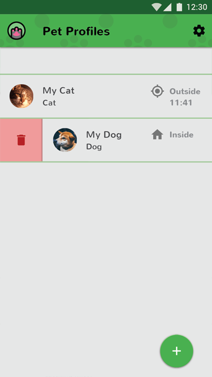

LetMeIn
This is an app that notifies you when to let your pet indoors, and keeps track of your pet while it's roaming free outside. It does this through a smart collar with GPS and Bluetooth, so you can find missing pets wherever they are. Notifications can be sent to either the phone or smartwatch and alerts can be customized based on distance from the home and pet waiting time.
Process
The project started with research and fact finding which included coming up with a hypothesis based on target user group demographics and pet statistics, evaluation of the target user group, analysis of competition and personas derived from targeted users. After this initial research phase was complete, user flows and mobile design patterns were considered and planned based on the aforementioned research. Wireframes were then built and tested using InVision until a first version could be assembled. Currently the app is going through a cycle of user feedback using the InVision prototyping tool and focus groups from the target user group.
Analysis
The early versions of the app contained various color inclusions and playful UI elements in order to build around positive experiences and interactions with the app. This thinking was flawed and showed up in user feedback with slightly over half the users finding the UI distracting and the other half liking the playful UI. These results meant that a simpler and clearer interface had to be created at the sacrifice of a fancier but more playful UI. The biggest factor that drove the switch was certain use cases that would involve fear or worry about the missing pet. In this instance it is absolutely crucial that information be presented clearly and without error. Visual flourishes and whimsy only seek to distract in these use cases and at the very least can be offensive and confusing and at most destroy the functionality completely. The new UI follows the material design guidelines from Google and implements familiar mobile design patterns which the previous version did not. Consolidation of color, pet profile listings and straightforward pet alert controls are just a few improvements that give more accessibility of information to users.
Responsibilities
- Information architecture
- Personas
- Product map
- User flows
- Page layout
- Icon design
- Logo design
Sign In/Sign Up Page

Pet Listing Page
Pet Profile Page

Door Alert Settings Page
Pet Map Page